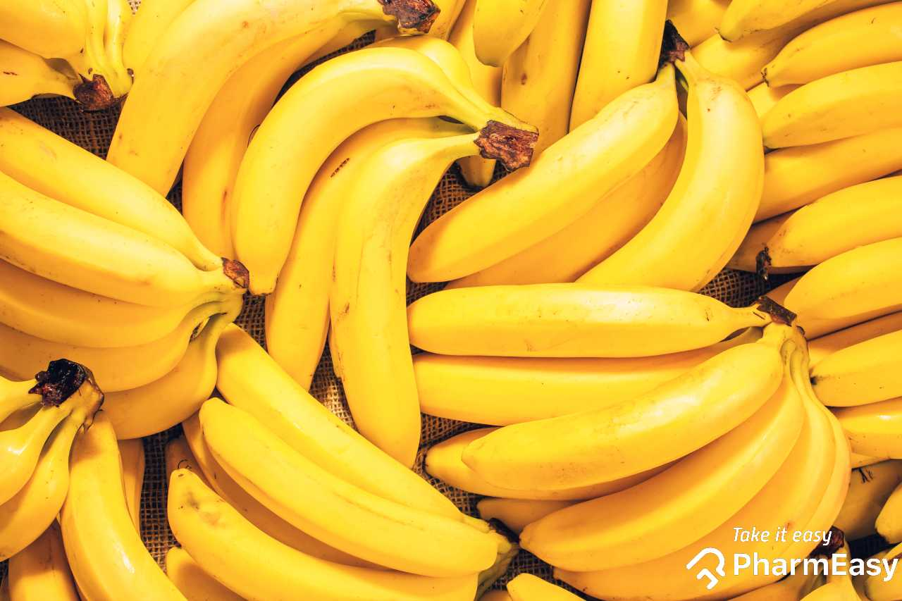

A banana is a popular tropical fruit that is widely loved for its sweet taste, soft texture, and nutritional value. It grows on large herbaceous plants belonging to the genus Musa.
Bananas are elongated and usually curved, with a yellow peel when ripe (though some varieties can be green, red, or even purple). Inside, the flesh is soft, creamy, and easy to eat.
Bananas are believed to have originated in Southeast Asia but are now grown in many tropical and subtropical regions around the world, including countries like Nigeria, India, Brazil, and Ecuador.
Bananas are rich in:
Bananas can be eaten in many ways:
To know more about Banana click more